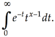

[CX] ![[Option Start]](../images/opt-start.gif)
The functionality described on this reference page is aligned with the ISO C standard. Any conflict between the
requirements described here and the ISO C standard is unintentional. This volume of POSIX.1-2017 defers to the ISO C
standard.
![[Option End]](../images/opt-end.gif)
These functions shall compute Γ(x) where Γ(x) is defined as

An application wishing to check for error situations should set errno to zero and call
feclearexcept(FE_ALL_EXCEPT) before calling these functions. On return, if errno is non-zero or
fetestexcept(FE_INVALID | FE_DIVBYZERO | FE_OVERFLOW | FE_UNDERFLOW) is non-zero, an error has occurred.
Upon successful completion, these functions shall return the gamma of x.
If x is a negative integer, a [CX] domain error may occur and
either a NaN (if supported) or an implementation-defined value shall be returned. [MX] On systems
that support the IEC 60559 Floating-Point option, a domain error shall occur and a NaN shall be returned.
If x is ±0, tgamma(), tgammaf(), and tgammal() shall return ±HUGE_VAL,
±HUGE_VALF, and ±HUGE_VALL, respectively. [MX] On systems that support the IEC 60559 Floating-Point option, a
pole error shall occur; otherwise, a [CX] pole error may occur.
If the correct value would cause overflow, a range error shall occur and tgamma(), tgammaf(), and tgammal()
shall return ±HUGE_VAL, ±HUGE_VALF, or ±HUGE_VALL, respectively, with the same sign as the correct value of
the function.
If the correct value would cause underflow, [MXX] and is not representable, a range error may occur, and tgamma(), tgammaf(), and tgammal() shall return
[MXX]
0.0, or (if IEC 60559 Floating-Point is not supported)
an implementation-defined value no greater in magnitude than DBL_MIN, FLT_MIN, and LDBL_MIN, respectively.
[MXX]
If the correct value would cause underflow, and is representable, a range error may occur and the correct value shall be
returned.
If x is subnormal and 1/ x is representable, 1/ x should be returned.
[MX] If
x is NaN, a NaN shall be returned.
If x is +Inf, x shall be returned.
If x is -Inf, a domain error shall occur, and a NaN shall be returned.
ISO/IEC 9899:1999 standard, Technical Corrigendum 2 #52 (SD5-XSH-ERN-85) is applied.
POSIX.1-2008, Technical Corrigendum 1, XSH/TC1-2008/0660 [68], XSH/TC1-2008/0661 [320], and XSH/TC1-2008/0662 [68] are
applied.
POSIX.1-2008, Technical Corrigendum 2, XSH/TC2-2008/0367 [604] and XSH/TC2-2008/0368 [630] are applied.